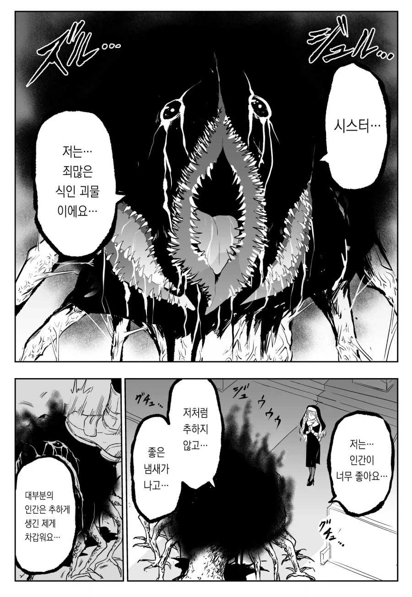
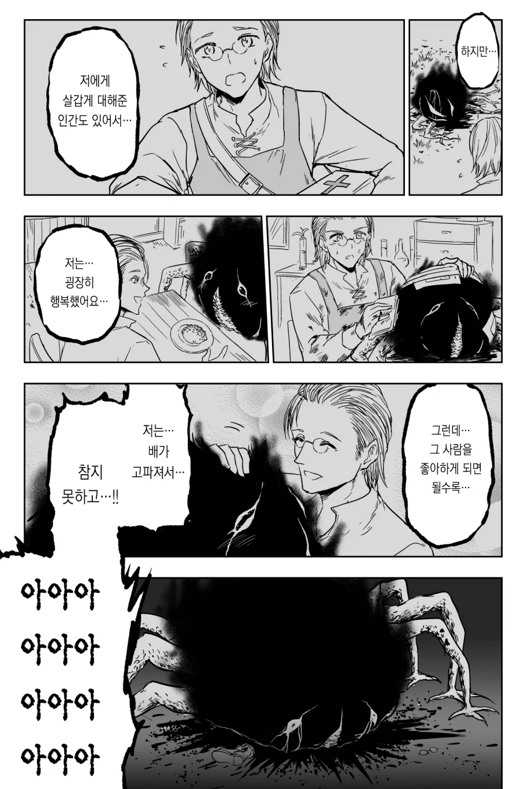
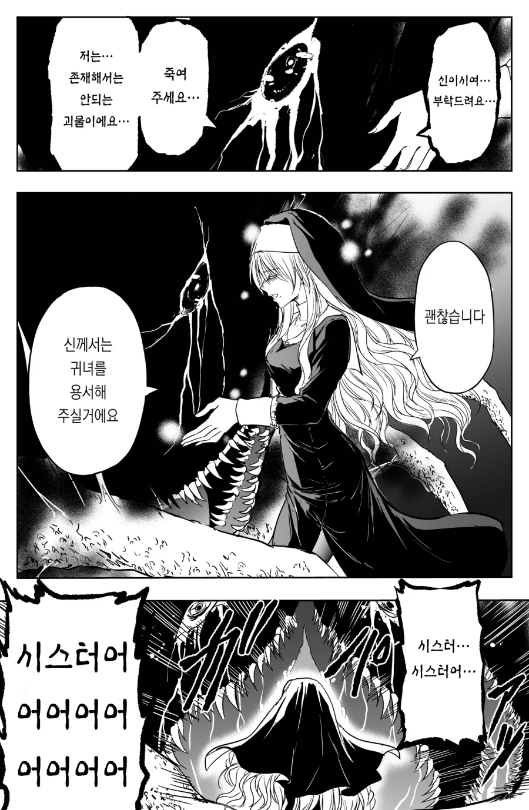
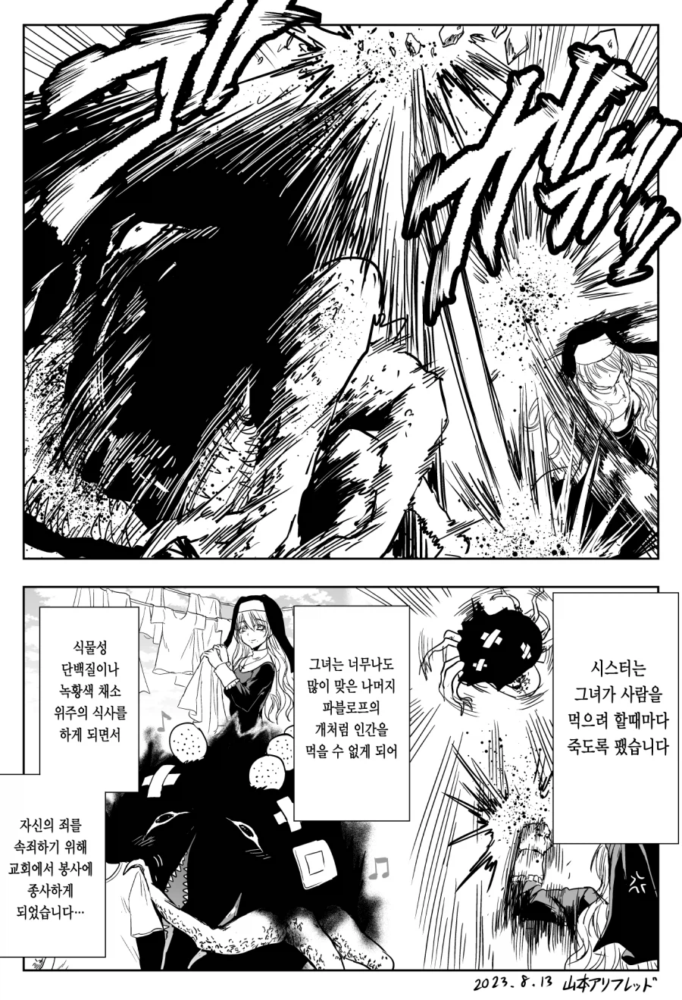

한발빼고 오렴
너도 저렇게 맞으면 고쳐질거야
요한, 너는 이세상에 존재해선 안되는 생물이야.
에게 이게 괴물?
에게
에... 넣었어?
이름없는 괴물 아시는구나!
아 갑자기 생 토마토 주스가 땡기는걸
ㅋㅋ
그정도는 괜찮아요. 많이 멀었네요 ㅎ

몬스터는 개띵작이야
나는 범인이다
피아노 치고 요리하는 scp 생각하고 들어옴
어둠의 강형욱 ㄷ
물리치료
보지같이 생겼어
자기 의사표현이 될정도면 행동교정도 되지
일단 고해성사부터 난이도 극악임 ㅋㅋ
물리치료 효과 확실하네
나를 봐 내 안의 괴물이 이렇게 커졌어